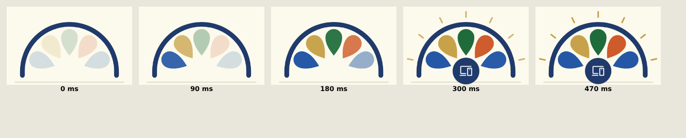
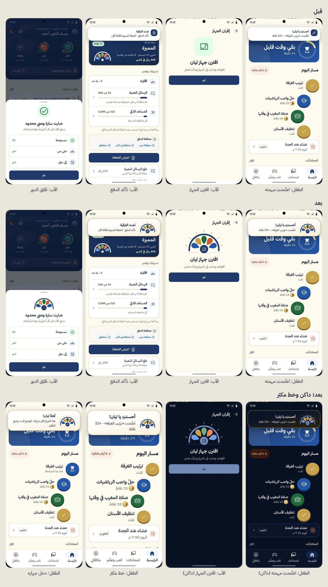
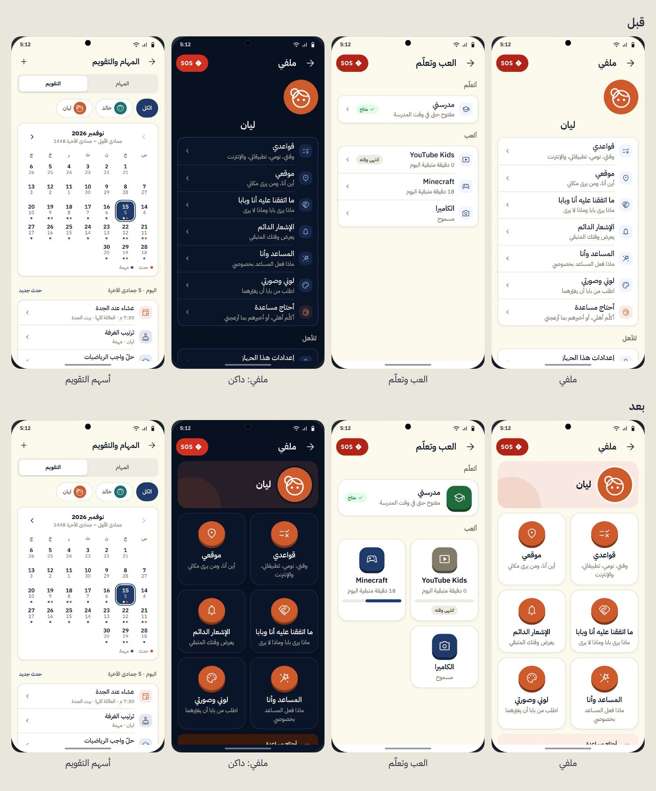
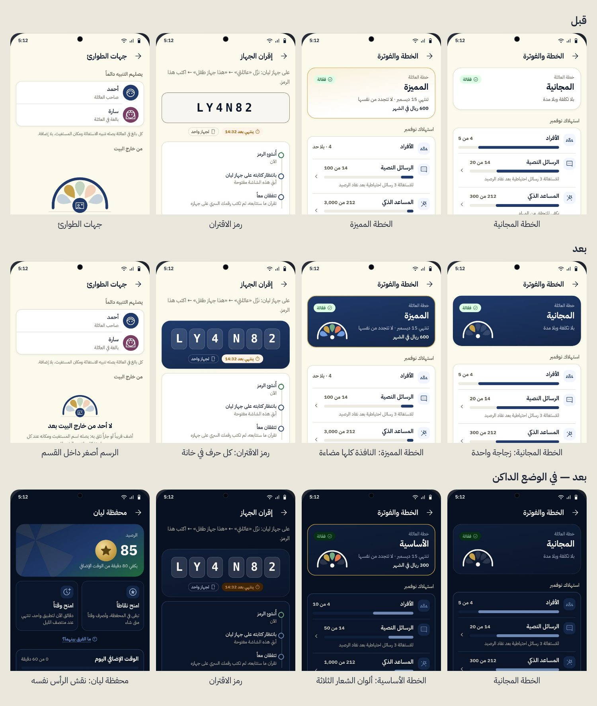
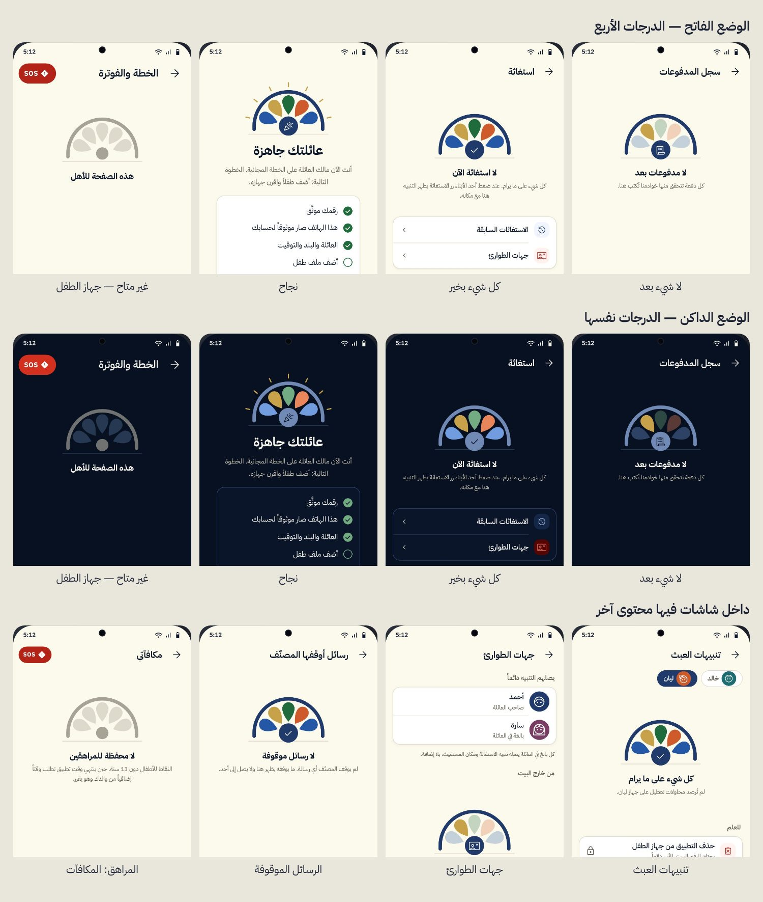
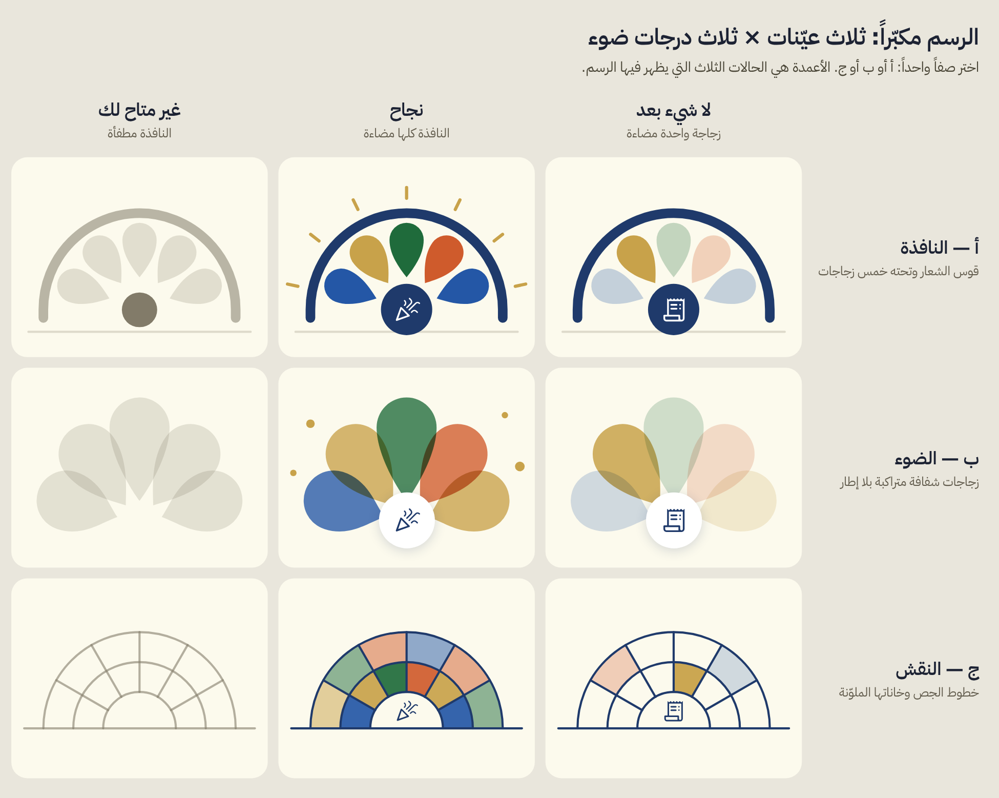
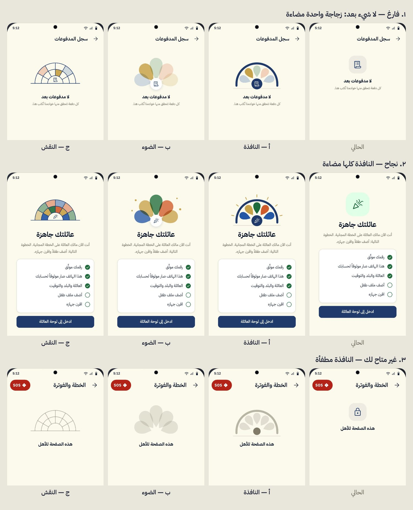

التحسين البصري — أين حصل كل تغيير
تحت كل تحسين: الشاشات التي تغيّرت. اضغط اسم الشاشة فتفتح حيّة في الإطار أسفل هذه الفقرة، ثم انظر صورة «قبل وبعد».
التحسين ٥ — الحركة (جديد)
الحركة لا تظهر في صورة ثابتة؛ جرّبها في الإطار الحي أعلى الصفحة:
- نافذة النجاح: اضغط «اقترن الجهاز» أعلاه. الزجاجات تضيء واحدة بعد واحدة ثم العلامة ثم الأشعة، في أقل من نصف ثانية. اضغط الزر مرة أخرى لتعيدها.
- الورقة لا تقفز: افتح «امنح نقاطاً» واضغط + أو −. كانت الورقة كلها تصعد من جديد عند كل ضغطة؛ الآن تتغير القيمة وحدها.
- كل ما يُضغط يستجيب: اضغط مطوّلاً على تبويب في الشريط السفلي أو على «الكل» بجانب عنوان. كان 39% مما يُضغط لا يتغير تحت الإصبع.
- تبديل التبويب: تلاشٍ سريع بدل الظهور المفاجئ.
- تقليل الحركة: من لوحة الضبط «الحالات» شغّل مفتاح «تقليل الحركة»: كل شيء يظهر فوراً، وما كان يدور يتوقف.

التحسين ٤ — لحظات النجاح (تمّ)
ما تغيّر: لحظة النجاح كانت إشعاراً رمادياً صغيراً أو مربعاً أخضر؛ صارت صورتها واحدة: نافذة القمرية مضيئة. بأشعة حين يكون فرحاً (الطفل كسب نقاطاً، اقترن الجهاز، تأكّد الدفع)، وبلا أشعة حين يكون تأكيداً هادئاً (طُبّق الدور). النصوص كلها كما هي.
تنبيه: بطاقة الطفل وبطاقة الدفع تختفيان بعد خمس ثوانٍ كما في التطبيق. اضغط الزر مرة أخرى لتراها من جديد.
الطريق في النموذج: بشخصية الأب، في رئيسيته تحت «يتطلب انتباهك» بطاقة تسليم ليان «ترتيب الغرفة»: اضغط «اعتماد»، ثم بدّل إلى شخصية «ليان» فتنزل البطاقة. واقتران الجهاز: في شاشة «إقران الجهاز» زر «اقترن الجهاز» أسفل الرمز (زر للنموذج يقوم مقام الجهاز الآخر).

التحسين ٣ — شاشات الطفل بلاطات (تمّ)
ما تغيّر: «ملفي» كانت قائمة رمادية مثل شاشات الأب؛ صارت لافتة باسم الطفل ولونه، ثم ست بلاطات كبيرة بأزرار مجسّمة بلونه، و«للأهل» بقي قائمة هادئة. «العب وتعلّم» صار كل تطبيق فيها بلاطة: أخضر للدراسة، كحلي للّعب، رمادي لما انتهى وقته، وشريط يبيّن الوقت الباقي. النصوص كلها كما هي.
تصحيح صغير معه: أسهم كانت تشير عكس الاتجاه: في بطاقة «أحتاج مساعدة» آخر رئيسية الطفل، وفي سهمي الشهر في «المهام والتقويم» ← «التقويم».
الطريق في النموذج: اختر شخصية «ليان» من زر «الشخصيات والرحلات»، ثم اضغط صورتها أعلى الرئيسية لفتح «ملفي»، أو التبويب «العب وتعلّم» في الأسفل.

التحسين ٢ — البطاقات البارزة (تمّ)
ما تغيّر: بطاقة الخطة كانت بيضاء فصارت كحلية مثل رأس الصفحة الرئيسية، وعليها نافذة صغيرة تضيء بقدر الخطة (زجاجة واحدة للمجانية، ثلاث للأساسية، خمس للمميزة). رمز الاقتران كان نصاً في صندوق رمادي فصار لوحة كحلية، كل حرف في خانة. والرسم صار أصغر حين يقع داخل قسم.
الطريق في النموذج: «المزيد» ← «الخطة والفوترة». وتغيير الخطة من لوحة الضبط بجانب الهاتف.

التحسين ١ — رسم القمرية في الشاشات الفارغة (تمّ)
ما تغيّر: كان في كل شاشة فارغة مربع رمادي فيه أيقونة؛ صار نافذة قمرية درجة ضوئها تقول الحال: زجاجة واحدة = لا شيء بعد، مضاءة كلها = كل شيء بخير، مضاءة بأشعة = نجاح، مطفأة = غير متاح لك. يظهر في كل الشاشات الفارغة (93 موضعاً).
الطريق في النموذج: «المزيد» ← «الخطة والفوترة» ← «سجل المدفوعات».

العيّنات التي عُرضت للاختيار
ثلاث عيّنات لرسم يظهر في الشاشات الفارغة ونهايات المسارات. الرسم نافذة قمرية، ودرجة ضوئها تقول حال الشاشة.
١. الرسم وحده مكبّراً
كل صف عيّنة، وكل عمود حالة: لا شيء بعد، نجاح، غير متاح لك.

٢. الرسم داخل شاشات الهاتف
في كل صف: الشكل الحالي يميناً، ثم أ، ثم ب، ثم ج.

٣. لماذا هذا العمل: حال النموذج اليوم
الصف الأعلى شاشات فيها شخصية، والأسفل شاشات عادية نريد رفعها إلى المستوى نفسه.